Студент: Сладкомедов Ярослав
Логин: u82683
Для подключения к учебному серверу университета, использующему протокол SSH, я использовал приложение PuTTY.
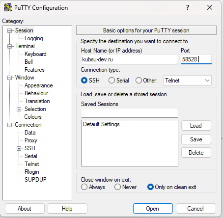
Скриншот: Настройки подключения в PuTTY
Чтобы подключиться к нужному серверу, я ввел данные:
После нажатия кнопки Open открылась консоль, в которую я ввел логин и пароль, полученные от преподавателя:
Далее мне открылся приветственный экран сервера.
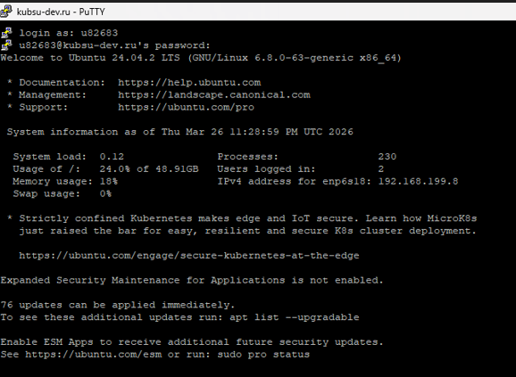
Скриншот: Приветственный экран после входа
Команда: ping kubsu.ru
Что делает команда: Утилита ping отправляет ICMP-запросы на указанный узел и измеряет время ответа.
Результат: Я получил IP адрес сервера kubsu.ru (185.13.84.92).
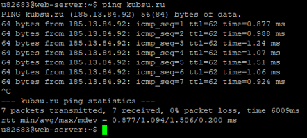
Скриншот 1: Результат выполнения команды ping для kubsu.ru
Команда: nslookup -type=A kubsu.ru
Что делает команда: Запрашивает у DNS-сервера адресную запись (A-запись) для домена, которая связывает имя с IPv4-адресом.
Результат: Я получил IP адрес сервера kubsu.ru 185.13.84.92.
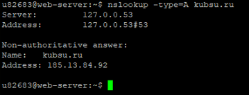
Скриншот 2: A-записи домена kubsu.ru
Команда: nslookup -type=MX kubsu.ru
Что делает команда: Запрашивает MX-записи домена, указывающие, какие почтовые серверы обслуживают домен и с каким приоритетом.
Результат: Я получил 3 почтовых сервера, обслуживающих kubsu.ru:
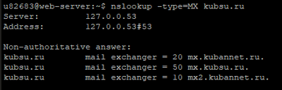
Скриншот 3: MX-записи домена kubsu.ru
Команда: nslookup -type=A kubsu-dev.ru
Что делает команда: Запрашивает у DNS-сервера адресную запись (A-запись) для домена kubsu-dev.ru.
Результат: Я получил IP адрес сервера kubsu-dev.ru 212.192.134.135.
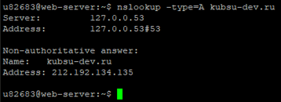
Скриншот 4: A-записи домена kubsu-dev.ru
Команда: nslookup -type=MX kubsu-dev.ru
Что делает команда: Запрашивает MX-записи домена, указывающие, какие почтовые серверы обслуживают домен.
Результат: Для домена kubsu-dev.ru не найдено MX-записей, то есть kubsu-dev.ru не имеет почтовых серверов. В авторитативном ответе указано 2 DNS-сервера: nsl.nameself.com и support.regtime.net.
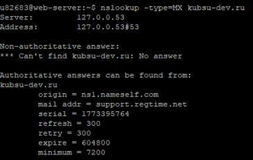
Скриншот 5: MX-записи домена kubsu-dev.ru
Команда: whois kubsu.ru
Что делает команда: Утилита whois запрашивает регистрационные данные домена из базы данных регистратора.
Результат: В результате вывелась строка created: 1998-03-28T12:18:30Z, то есть домен kubsu.ru зарегистрирован 28 марта 1998 года. Домен оплачен до 30 апреля 2026 года.
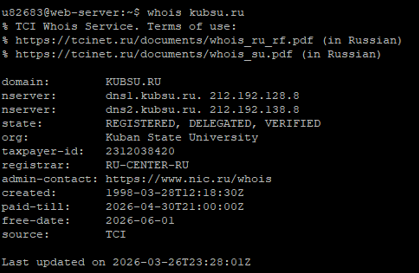
Скриншот 6: Результат выполнения whois для kubsu.ru
Команда: whois kubsu-dev.ru
Что делает команда: Утилита whois запрашивает регистрационные данные домена из базы данных регистратора для kubsu-dev.ru.
Результат: В результате вывелась строка created: 2020-02-12T15:55:06Z, то есть домен kubsu-dev.ru зарегистрирован 12 февраля 2020 года. Домен оплачен до 12 февраля 2027 года.
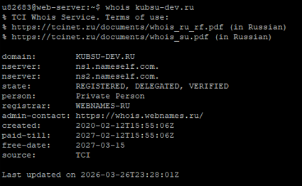
Скриншот 7: Результат выполнения whois для kubsu-dev.ru
1) Я создал файл index.html в отдельной папке.
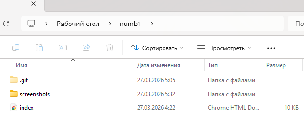
Скриншот: Создание файла index.html
2) Также в этой папке я создал папку screenshots со всеми фото, которые будут на сайте.
3) Далее я выбрал эту папку в программе Git Bash, а затем с помощью команд скопировал все содержимое папки в новый репозиторий на GitHub:
git init
git add .
git commit -m "Первая версия"
git remote add origin https://github.com/sladkomedovyaroslav/numb1
git push -u origin main
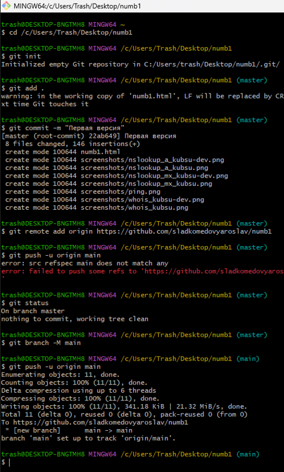
Скриншот: Результат выполнения git push
4) После этого я подключился к серверу по SSH и склонировал репозиторий в каталог www:
cd ~/www
git clone https://github.com/sladkomedovyaroslav/numb1.git numb1
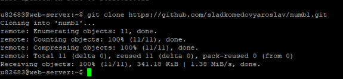
Скриншот: Результат выполнения git clone
5) Веб-страница открывается по адресу: http://u82683.kubsu-dev.ru/numb1/
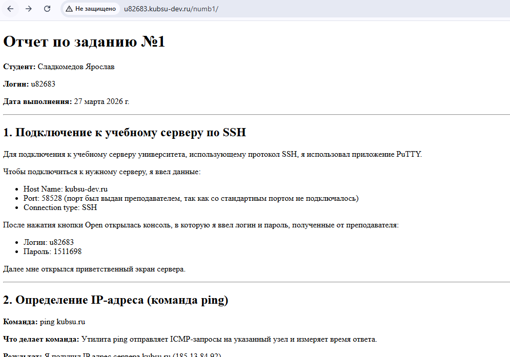
Скриншот: Веб-страница в браузере
Я использовал программу FileZilla Client для подключения к серверу по SFTP. Данные для подключения:
После подключения я скопировал файлы из папки ~/www/numb1/ на локальный компьютер. Все файлы успешно скачались.
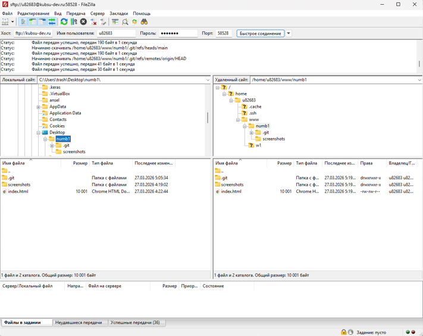
Скриншот 8: Окно FileZilla после скачивания файлов с сервера
Git-репозиторий: https://github.com/sladkomedovyaroslav/numb1
Сайт: http://u82683.kubsu-dev.ru/numb1/